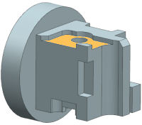
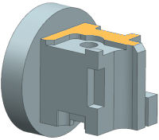
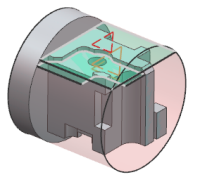

Select two faces to machine
When you select multiple faces, all the faces must be planar and parallel to each other.
-
In the Geometry group, click Specify Cut Area Floor
 .
.
The Cut Area dialog box is displayed.
-
Select the floor face as shown for set 1.

-
Click Add New Set
 .
.
-
Select the floor face as shown for wall set 2.

-
Click OK.
The Floor Wall IPW dialog box is displayed.
